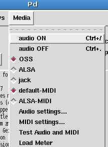

Configuring Pure Data
Pd-Extended has done a lot to make installing and setting up Pure Data easier than ever before. But every computer system is different, and each Pd user will have different needs. This section shows how to configure the most basic parts of Pd, including the soundcard and MIDI devices, as well as some advanced configuration options for those wishing to customize their installation.
Basic configuration
The first thing we'll want to do once Pd is running is make sure that the audio is configured correctly. This includes choosing the correct drivers, the correct soundcard and the proper latency for your system to be both responsive and glitch-free. Also, if you have any MIDI devices (such as keyboards or fader boxes), you can set Pd up to use those as well. After that, you can test the audio and MIDI to make sure it is working properly.
Audio drivers
Pd can use a variety of audio drivers to connect to the soundcard. So our first step is to chose the correct ones. This can be done via the "Media" menu:OSX : Media -> portaudio/jack
Linux : Media -> OSS/ALSA/jack
Windows : Media -> ASIO (via portaudio)

This part of the menu should list the available audio drivers on your system, and allow you to switch between them. The drivers you have depend on your operating system, and what drivers you have installed on that operating system. Keep in mind you may not have all of these installed on your computer:
Linux
- OSS
- ALSA
- jack
OS X
- portaudio
- jack
Windows
- MMIO
- ASIO
Linux users are encouraged to investigate JACK (Jack Audio Connection Kit), an audio server which allows different audio applications to be connected with virtual "cables" in your computer. JACK, and it's Graphical User Interface QJackctl, should be available from whatever Linux distribution you happen to be running.
Many OS X users have also reported that audio runs smoother and with less CPU load when using JackOSX, an implementation of the JACK server and user interface for the Mac OS. JackOSX can be found at http://jackosx.com/
And Windows users may find configuring their ASIO soundcards much easier by using ASIO4ALL, which can be downloaded from http://www.asio4all.com/
MIDI drivers (Linux only)
Linux : Media -> default-MIDI/ALSA-MIDI
This menu which allows you to switch between the built-in Pd MIDI drivers and the ALSA MIDI drivers, if they are installed. If the ALSA MIDI drivers are used, then JACK users can use the QJackctl application (available in most Linux distributions) to connect external MIDI devices and other MIDI applications running on the same computer to Pd.
Audio Settings
OSX : Pd-extended -> Preferences -> Audio Settings
Linux & Windows : Media -> Audio Settings

This is one of the most important configuration menus in Pd. Here you can change the sample rate, delay, input and output devices as well as the number of channels they use.
Sample rate
The sampling rate for CD quality audio is 44,100 Hz. Most computer soundcards run at this sampling rate, or at 48,000 Hz, by default. Choose the rate that matches the rate of your soundcard or audio drivers here.
Delay (msec)
Your computer needs a certain amount of time to process all the information coming out of Pd and send it to the soundcard for playback. Likewise, when you are recording, Pd needs a certain amount of time to gather all the information coming from the soundcard. The term for this delay is called latency, and it measures the amount of time between the moment when you tell Pd to do something (for example by playing a note on a keyboard), and when you hear the result of that action. A shorter latency means you will hear the results quicker, giving the impression of a more responsive system which musicians tend to appreciate. However, with a shorter latency you run a greater risk of getting an interruption or 'glitch' in the audio. This is because the computer does not have enough time to "think about" the sound before sending it to the soundcard. A longer latency means less chances of glitches, but at the cost of a slower response time. It is up to you to find the best balance for your own needs, but the default latency in Pd is 50 milliseconds. You can increase or decrease the latency of Pd by entering a value in milliseconds in this box. If you are using the JACK API, the delay will be set by your JACK audio server and manual inputs in the field 'delay' are without effect.
Input Device
Choose the soundcard you wish to use with Pd and the number of channels you want to use. In the case of a normal, stereo soundcard you would enter the number 2. For a multichannel soundcard, you may choose some or all of the channels. Make sure this is checked if you would like to record sound into Pd.
Output Device
Choose the same soundcard as you selected for the Input Device, and a matching number of channels as you selected for the Input Device as well. Although it may be possible to use different soundcards and unmatched numbers of channels for input and output on some systems, this can also cause problems for Pd, so experiment first. Make sure the checkbox next to the device is checked.
MIDI Settings
OSX : Pd -extended -> Preferences -> MIDI Settings
Linux & Windows : Media -> MIDI Settings
On Linux, you have a choice of using the built-in MIDI drivers, or the ALSA-MIDI drivers if they are installed. If you are using the built-in drivers, you should be able to choose which devices to Pd will send and receive MIDI messages with. You may also select "use multiple devices" if you have several applications or devices using MIDI. This method is rather complex, because you must set up the devices by number using your startup flags and you will not be able to change them while Pd is running. Using the ALSA-MIDI drivers is easier to manage, and therefore recommended.
When using the ALSA MIDI drivers on Linux, you can tell Pd the number of In and Out Ports to use here. These are connections which other MIDI applications or devices can use to connect to and from Pd. To connect devices or applications, you can use ALSA MIDI with the JACK audio drivers and the Qjackctl if you have them installed. In Qjackctl, you will see a tab for MIDI, and be able to connect the inputs and outputs of MIDI devices and applications by clicking on them.
On Mac OS X, to use MIDI you must first open the "Audio MIDI Setup.app", which is located in your Applications/Utilities folder. Once this application is open, and you have connected your external MIDI devices (if any), you should be able to see your MIDI devices in this window. Minimize the "Audio MIDI Setup.app" and return to Pd and this "MIDI Settings" menu. Now you will be able to choose which devices with which Pd will send and receive MIDI messages. You may also select "use multiple devices" if you have several applications or devices using MIDI.
Test Audio and MIDI
OSX, Linux & Windows : Media -> Test Audio and MIDI
To make sure that you've configured your audio and MIDI correctly, Pd includes a patch to test your setup. If you open "Test Audio and MIDI", you will see this window:

First, click one of the radio buttons marked either "-20" or "-40" under "TEST SIGNAL". If your audio is set up correctly, you will hear a test tone and you will see some of the number boxes above "AUDIO INPUT" changing to measure any incoming audio signal from the line in or microphone of your computer. If you have any external MIDI devices or a piece of MIDI software connected to Pd, you can test the connection by sending MIDI data to Pd and watching to see if the number boxes connected to [notein] and [ctlin] change.